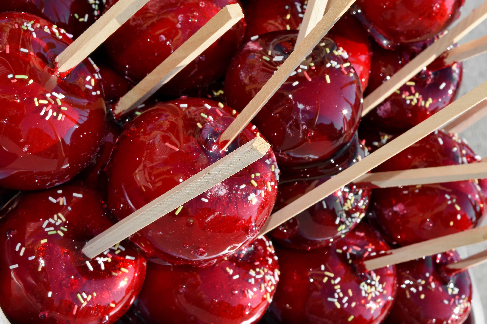

Caramel Apples

Description
Crisp, juicy apples dipped in rich, buttery caramel and coated with your favorite toppings. A classic fall treat that's sweet, sticky, and irresistibly fun to make and eat!
Ingredients
- 6 medium apples (Granny Smith or Honeycrisp)
- 14 oz bag soft caramels
- 2 tbsp heavy cream
- Wooden sticks or skewers
- Sprinkles
Steps
- Prep: Wash and dry apples well, then insert sticks.
- Melt: Heat caramels and cream in a saucepan, stirring until smooth.
- Dip: Swirl each apple in caramel, letting excess drip off.
- Set: Place on parchment paper and chill until firm.
- Decorate: Drizzle with sprinkles.